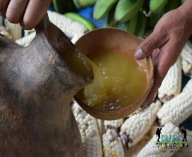
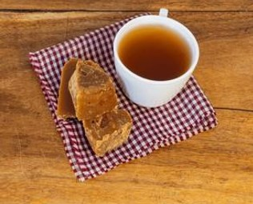
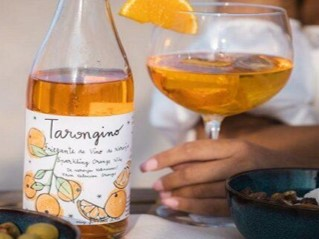
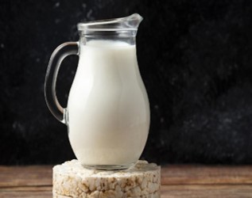
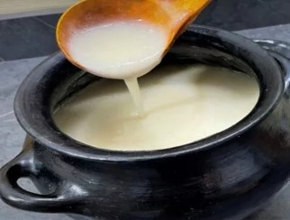

Bebidas
Descubre los maravillosos platillos, bebidas y dulces tradicionales que el municipio
de Toledo tiene para ofrecer

Descubre los maravillosos platillos, bebidas y dulces tradicionales que el municipio
de Toledo tiene para ofrecer

El guarapo de panela fermentado es una bebida tradicional latinoamericana, refrescante y ligeramente alcohólica, elaborada disolviendo panela en agua y dejándola fermentar, usualmente con cáscaras de piña, durante 2 a 15 días. Se caracteriza por su sabor dulce-ácido y su espuma, siendo popular por sus propiedades energizantes.

El aguapanela (o agua de panela) es una de las bebidas más emblemáticas de la gastronomía colombiana y latinoamericana. Se prepara disolviendo panela jugo de caña de azúcar evaporado y solidificado sin refinar en agua.

Este es un fermentado artesanal muy popular en países como Colombia, donde se utiliza directamente el jugo de la naranja.
Sabor: Cítrico, dulce o semiseco, con la frescura vibrante de la fruta.
Proceso: Se fermenta el jugo de naranja con azúcar y levaduras durante varios días o semanas.

El kumis artesanal o casero es una bebida láctea fermentada valorada por su textura cremosa, sabor ligeramente ácido y alto contenido de probióticos naturales que benefician la salud intestinal. A diferencia de muchas versiones industriales, el artesanal suele evitar conservantes y permite controlar el nivel de azúcar.

El masato artesanal es una bebida fermentada tradicional, común en Colombia (especialmente Boyacá y Santander) y la Amazonía, hecha base de arroz (o yuca), agua, panela/azúcar, canela y clavos. Se caracteriza por su textura espesa y sabor agridulce, logrados mediante una fermentación natural de 3 a 5 días, a veces potenciada con cerveza o cáscaras de piña.